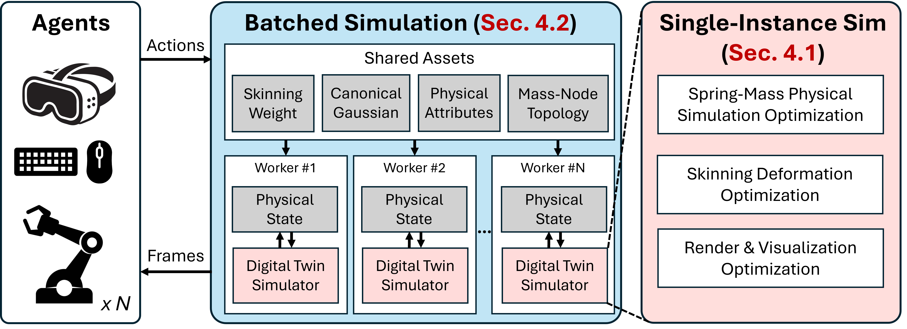
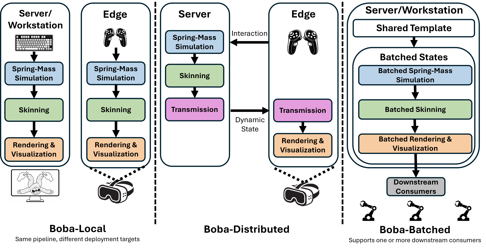
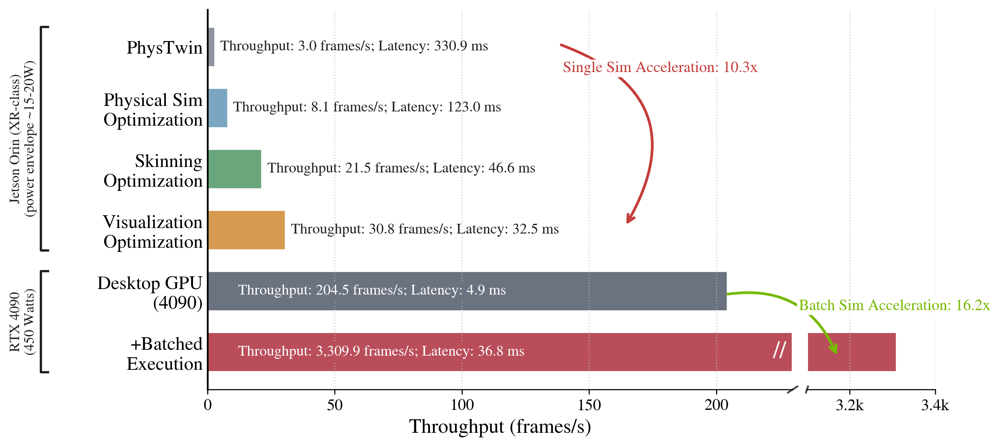
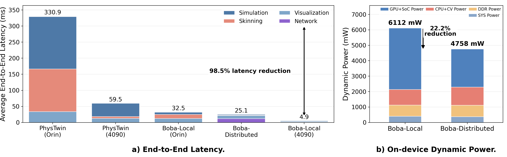
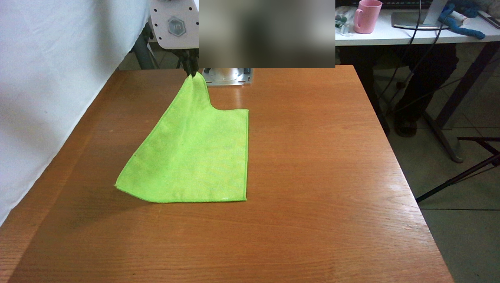
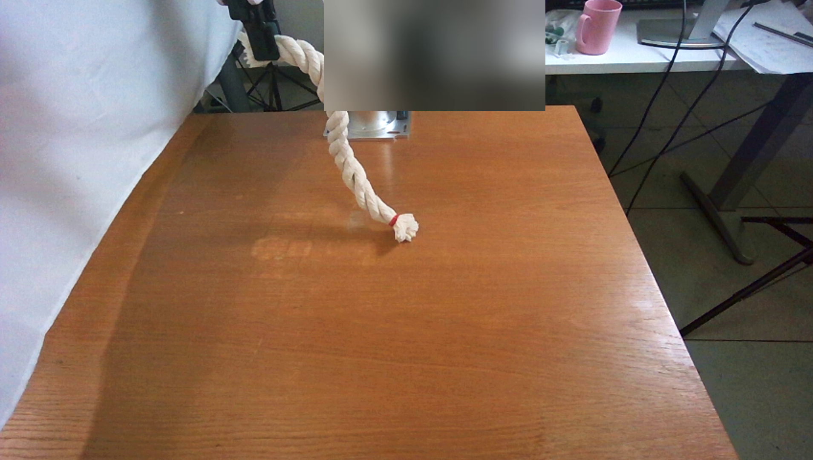
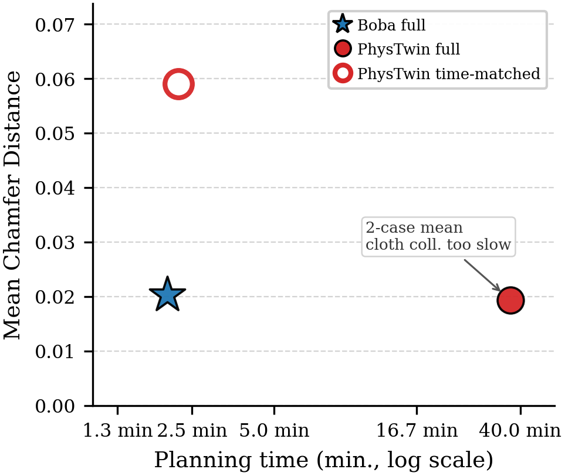
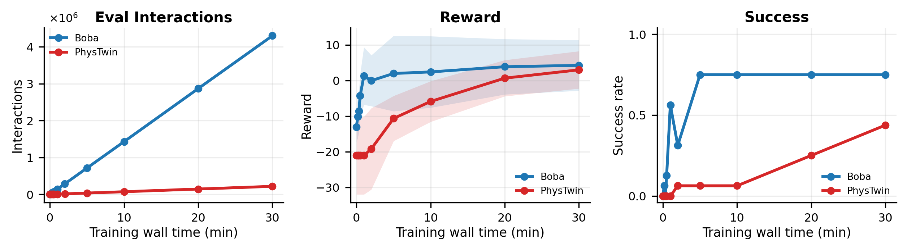
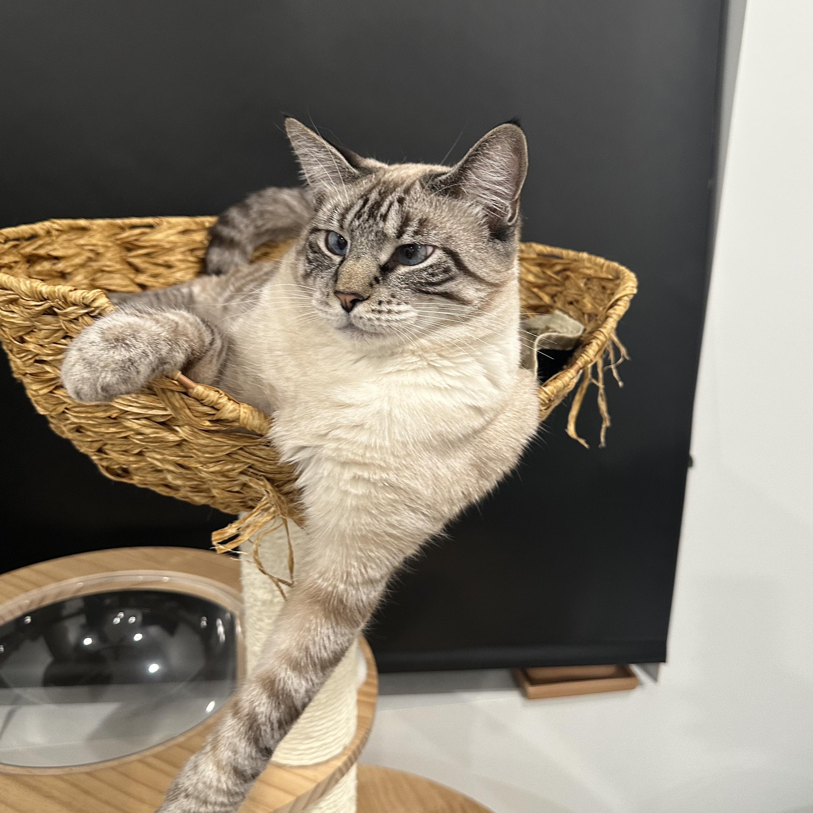

>10×
single-instance speedup
over PhysTwin on embedded and desktop GPUs
One physical twin. Many parallel rollouts. One GPU.
Boba co-designs physics, Gaussian deformation, and rendering for batched execution—turning one reconstructed deformable object into many independent, high-fidelity simulation rollouts.
>10×
single-instance speedup
over PhysTwin on embedded and desktop GPUs
16.2×
aggregate throughput
over optimized single-instance execution on RTX 4090
13.2×
lower XR latency
Boba-Distributed versus PhysTwin on Orin
26×–>2,000×
faster predictive control
from rope to matched self-collision cloth planning*
Overview
Existing Gaussian physical twins deliver realistic appearance and dynamics, but execute one instance at a time. Boba makes parallel rollouts a first-class systems problem.
Digital twins replicate the appearance and physical behavior of real-world objects for interactive simulation in XR, robotics, and gaming. While neural representations such as 3D Gaussians enable high-fidelity twins reconstructed from images, existing systems simulate only one instance at a time and barely reach real-time performance, making large-scale rollout evaluation impractical.
We present Boba, the first batched simulator for physics-based Gaussian digital twins. Boba separates the static twin template from dynamic simulation state and co-designs physics, deformation, and rendering/visualization for batched execution. Compact surrogate spring–mass models, mixed-precision Gaussian skinning, memory-efficient execution, and shared-memory-aware batching reduce compute, memory traffic, and synchronization overhead.
Boba achieves over 10× single-instance speedup on XR-class hardware, scales to 3,310 FPS on RTX 4090, and substantially accelerates predictive control for deformable-object manipulation—supporting both power-constrained XR and scalable robot planning.
Method
Boba optimizes the complete digital-twin path and adds batching-aware memory layouts and scheduling where conventional process replication breaks down.

Surrogate spring–mass models reproduce dense-system behavior with substantially less compute and memory.
Mixed-precision Gaussian skinning and memory-traffic-aware execution accelerate per-frame updates.
Static twin assets are stored once while each simulation retains an independent dynamic state.
Shared-memory-aware layouts and atomic-free scheduling turn GPU capacity into sustained throughput.
Deployment variants

Complete single-instance execution on an edge device or workstation. On XR-class Orin, it reaches 30.8 FPS at 32.5 ms—a 10.2× latency improvement over PhysTwin.
Server simulation and skinning with edge rendering. On XR-class Orin, it achieves 39.8 FPS at 25.1 ms—a 1.3× latency improvement and 22.2% lower device dynamic power than Boba-Local.
A shared GPU pipeline over many independent states. On RTX 4090, it reaches 3,309.9 FPS aggregate throughput—16.2× optimized single-instance execution on the same GPU.
Results
Boba-Distributed gives the best XR edge latency–power trade-off, Boba-Local maximizes raw single-instance desktop speed, and Boba-Batched maximizes aggregate throughput.
3,309.9
FPS
Average of the best sustained aggregate throughput over full runs across evaluated scenarios.
39.8
FPS · 25.1 ms
1.3× latency improvement over Boba-Local on XR-class Orin, reducing end-to-end latency from 32.5 ms to 25.1 ms.
−22.2%
Device dynamic power
4.76 W versus 6.11 W for Boba-Local on the same edge device.
204.5
FPS
12.1× faster than the same-hardware PhysTwin baseline.
30.8
FPS
Real-time local execution at an approximately 15 W embedded compute budget.


Fidelity
Across the full recorded interaction, Boba remains visually consistent with real observations and the PhysTwin baseline.
Applications
The main paper and supplement demonstrate Boba across robot planning, immersive XR interaction, and reinforcement learning.
Immersive XR · Supplement
A Quest 3 user manipulates a simulated Gaussian physical twin inside a stereo reconstructed scene. The workstation handles simulation, skinning, rendering, composition, and application logic while streaming the composed views to the headset.
Download demo videoCloth planning
Target and execution
Rope planning
Target and execution
Model-based motion planning · Main + supplement
26×
The supplement shows cloth and rope plans from both robot and third-person views. Parallel rollouts reduce the wall time of PhysTwin-based model predictive control; the paper also reports more than 16× for cloth without self-collision and an estimated greater-than-2,000× speedup with self-collision enabled.
Read the application study
MPC accuracy · Supplement
Boba matches full-PhysTwin rollout target CD in substantially less planning time; under the same time budget, PhysTwin evaluates fewer rollouts and yields higher target error.

RL training · Supplement
Under identical PPO settings, Boba produces more interactions per wall-clock time and reaches higher reward and success earlier on the rope-reaching task.

Meet Boba
Boba is Yihan’s cat and has supervised him throughout this project.
Resources
BibTeX
@inproceedings{pang2026boba,
title = {Boba: Batched Simulation for Physics-Based Gaussian Digital Twins},
author = {Pang, Yihan and Jiang, Hanxiao and Kondguli, Sushant and
Adve, Sarita and Wang, Shenlong},
booktitle = {European Conference on Computer Vision (ECCV)},
year = {2026}
}* The greater-than-2,000× cloth result is an estimate reported for matched self-collision; see the paper for protocol and qualification.